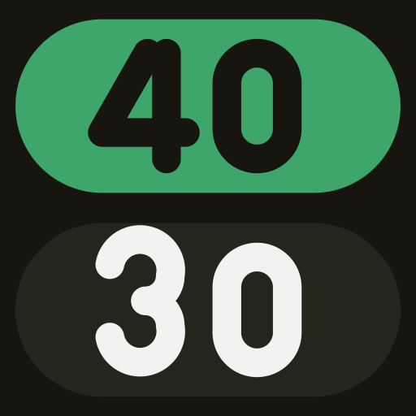
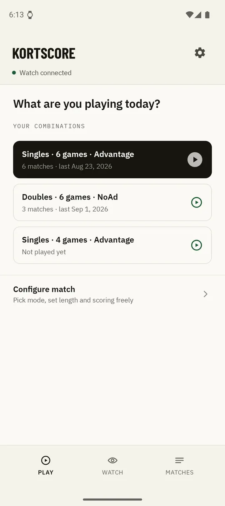
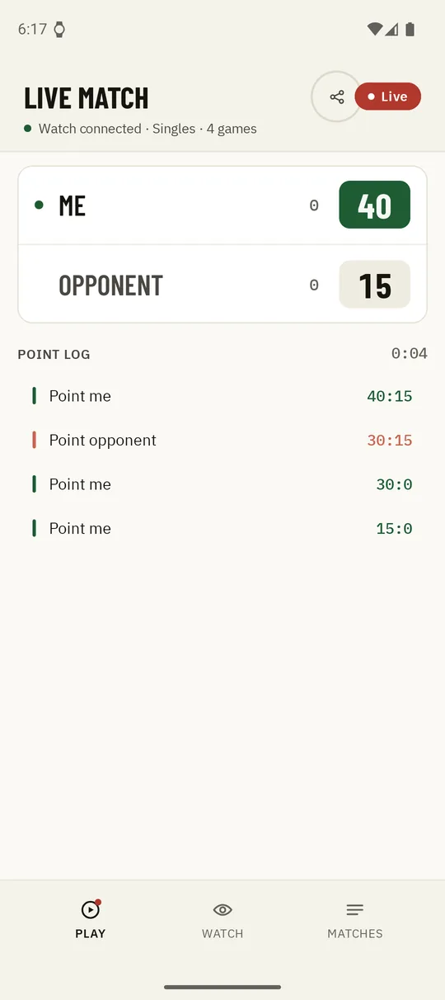
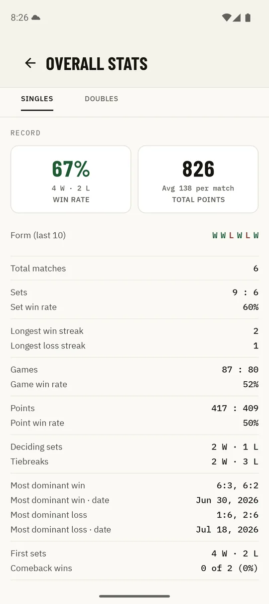
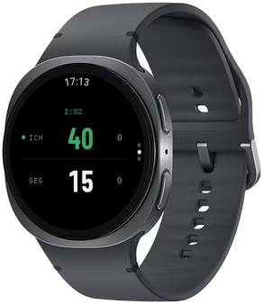

1×
The simplest controls
One tap on the watch and the point is counted. Twice for your opponent, four times to undo. No need to look at the display, no interrupted play.

KortscoreTennis & padel · Phone & watch
Kortscore counts your tennis or padel match on your wrist, point by point, without interrupting play. And whoever is not on court watches live.




1×
One tap on the watch and the point is counted. Twice for your opponent, four times to undo. No need to look at the display, no interrupted play.
67%
Win rate, set record, the point history of every match: your whole match history, evaluated automatically.
Live
Family, friends and club mates follow your match in real time on their phone, point by point, from anywhere.
0 €
Scoring, history and the live ticker cost nothing. Anyone who wants to dig deeper picks up Kortscore Plus.
01
Pick a format, or just tap the last combination. Singles, doubles, NoAd, best of 3, a single set: it all works.
02
The watch counts points, games and sets by real tennis and padel rules, tiebreak and champions tiebreak included.
03
The match lands in your history on the phone automatically, with the score in broadcast notation, duration and point history.
Also for padel
Padel scores like tennis: 15, 30, 40, game, set. So Kortscore needs no special treatment for it, the watch simply counts along. One tap per point, on court, without interrupting play.
For clubs & league play
On a league day several matches run at once, and nobody can be everywhere. With the live ticker the team, the captain and the fans follow every match in real time: from the next court, from the clubhouse or from home.
iPhone & Apple Watch
Kortscore runs on Android and Wear OS today. An iOS version is going to be built over the coming while. Join the waitlist and we will let you know as soon as there is a first version to test.
No newsletter · no forwarding · Privacy
FAQ
Short answers to what people ask before their first match with Kortscore.
No. The watch keeps score entirely on its own, even without a connection. Only the live ticker needs the phone within Bluetooth range, because the phone is what sends the score online. Wi-Fi or LTE on the watch alone is not enough for that.
Any watch running Wear OS 3 or newer: Samsung Galaxy Watch from the Watch 4 on, Google Pixel Watch and every other Wear OS watch. Plus an Android phone on Android 8 or newer. Three picks for the court are on the watches page, the full model list on the compatibility page.
Tap the watch once: point for you. Twice: point for your opponent. Four times: undo the last point. Games, sets and tiebreaks are worked out by the watch, you never need to look at the display. If you want to run through it once in peace: the app has a guide on both the phone and the watch where you can practise every tap.
Yes. Advantage or NoAd, sets to 6 or to 4, tiebreak and champions tiebreak, best of 3 or a single set. For padel, pick golden point as NoAd and the point at 40:40 decides the game. The rules in detail: tennis scoring, padel scoring.
You share a link, that is all. Whoever opens it sees the score, the set history and who is serving, live in the browser, point by point. Spectators need no app and no account, whether they are on the next court or at home. Your phone has to be within Bluetooth range of the watch for this.
Nothing. Scoring, match history and the live ticker are free, with no ads and no account. Kortscore Plus is a one-time purchase and adds advanced statistics, automatic backups and the AI coach that analyses your matches.
Yes, with no detours. Padel is scored like tennis, and doubles is one of the formats right on the start screen. Singles, doubles, NoAd: pick once and the watch counts along.
Not yet, but soon: the version for iPhone and Apple Watch arrives in the coming weeks. Join the waitlist and we will tell you as soon as it is in the App Store.
Free for Wear OS and Android. Ready in two minutes.

Wear OS 3+ · Android 8.0+ · no ads, no account